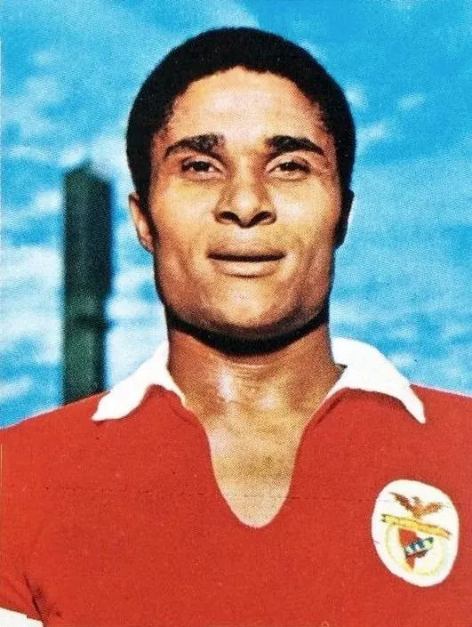

The profile
Eusébio
Eusébio was born in Lourenço Marques, now Maputo, in Mozambique when it was under Portuguese rule. He learned the game locally before moving to Lisbon as a young forward.
He became Benfica's leading star, winning domestic and European honours with his speed and fierce shooting. He could burst past a defender or score from distance, and his direct style made him Portugal's most feared forward. His long Benfica career gave him a place among the game's great finishers.
Eusébio drove Portugal to third place at the 1966 World Cup, its best finish. He scored nine goals to lead the tournament, including four as Portugal came back from three goals down against North Korea in the quarter-finals. His finishing gave a talented side the belief and attacking force to reach the semi-finals before England ended its title hopes.
1966England
Third place
Group C Portugal3 : 1Hungary
- JOSE AUGUSTO2′
- JOSE AUGUSTO67′
- JOSE TORRES90′
- Ferenc BENE60′
Portugalhome
Starting lineup
- CARVALHO
- VICENTE
- HILARIO
- MORAIS
- ALEXANDRE BAPTISTA
- MARIO COLUNA
- JAIME GRACA
- ANTONIO SIMOES
- JOSE AUGUSTO
- EUSEBIO
- JOSE TORRES
Substitutions
- No substitutions
Hungaryaway
Starting lineup
- Antal SZENTIMIHALYI
- Beno KAPOSZTA
- Sandor MATRAI
- Kalman SOVARI
- Kalman MESZOLY
- Ferenc SIPOS
- Istvan NAGY
- Ferenc BENE
- Florian ALBERT
- Janos FARKAS
- Gyula RAKOSI
Substitutions
- No substitutions
Group C Portugal3 : 0Bulgaria
- Ivan VUTSOV17′ · own goal
- EUSEBIO38′
- JOSE TORRES81′
Portugalhome
Starting lineup
- JOSE PEREIRA
- VICENTE
- GERMANO
- HILARIO
- FESTA
- MARIO COLUNA
- JAIME GRACA
- ANTONIO SIMOES
- JOSE AUGUSTO
- EUSEBIO
- JOSE TORRES
Substitutions
- No substitutions
Bulgariaaway
Starting lineup
- Georgi NAIDENOV
- Aleksandar SHALAMANOV
- Ivan VUTSOV
- Boris GAGANELOV
- Dimitar PENEV
- Dinko DERMENDZHIEV
- Dobromir JECHEV
- Georgi ASPARUKHOV
- Petar ZHEKOV
- Dimitar YAKIMOV
- Aleksandar KOSTOV
Substitutions
- No substitutions
Group C Portugal3 : 1Brazil
- ANTONIO SIMOES15′
- EUSEBIO27′
- EUSEBIO85′
- RILDO73′
Portugalhome
Starting lineup
- JOSE PEREIRA
- VICENTE
- HILARIO
- MORAIS
- ALEXANDRE BAPTISTA
- MARIO COLUNA
- JAIME GRACA
- ANTONIO SIMOES
- JOSE AUGUSTO
- EUSEBIO
- JOSE TORRES
Substitutions
- No substitutions
Brazilaway
Starting lineup
- MANGA
- FIDELIS
- BRITO
- ORLANDO
- RILDO
- DENILSON
- LIMA
- PELE
- JAIRZINHO
- SILVA BATUTA
- PARANA
Substitutions
- No substitutions
Quarter-final Portugal5 : 3North Korea
- EUSEBIO27′
- EUSEBIO43′ · pen.
- EUSEBIO56′
- EUSEBIO59′ · pen.
- JOSE AUGUSTO80′
- PAK Seung Zin1′
- LI Dong Woon22′
- YANG Seung Kook25′
Portugalhome
Starting lineup
- JOSE PEREIRA
- VICENTE
- HILARIO
- MORAIS
- ALEXANDRE BAPTISTA
- MARIO COLUNA
- JAIME GRACA
- ANTONIO SIMOES
- JOSE AUGUSTO
- EUSEBIO
- JOSE TORRES
Substitutions
- No substitutions
North Koreaaway
Starting lineup
- LEE Chang Myung
- SHIN Yung Kyoo
- LIM Zoong Sun
- LI Dong Woon
- IM Seung Hwi
- PAK Doo Ik
- HAN Bong Zin
- OH Yoon Kyung
- HA Yung Won
- PAK Seung Zin
- YANG Seung Kook
Substitutions
- No substitutions
Semi-final England2 : 1Portugal
- Bobby CHARLTON30′
- Bobby CHARLTON80′
- EUSEBIO82′ · pen.
Englandhome
Starting lineup
- Gordon BANKS
- George COHEN
- Ray WILSON
- Jack CHARLTON
- Bobby MOORE
- Nobby STILES
- Alan BALL
- Martin PETERS
- Bobby CHARLTON
- Geoff HURST
- Roger HUNT
Substitutions
- No substitutions
Portugalaway
Starting lineup
- JOSE PEREIRA
- HILARIO
- ALEXANDRE BAPTISTA
- JOSE CARLOS
- FESTA
- MARIO COLUNA
- JAIME GRACA
- ANTONIO SIMOES
- JOSE AUGUSTO
- EUSEBIO
- JOSE TORRES
Substitutions
- No substitutions
Third-place match Portugal2 : 1Soviet Union
- EUSEBIO12′ · pen.
- JOSE TORRES89′
- Eduard MALOFEYEV43′
Portugalhome
Starting lineup
- JOSE PEREIRA
- HILARIO
- ALEXANDRE BAPTISTA
- JOSE CARLOS
- FESTA
- MARIO COLUNA
- JAIME GRACA
- ANTONIO SIMOES
- JOSE AUGUSTO
- EUSEBIO
- JOSE TORRES
Substitutions
- No substitutions
Soviet Unionaway
Starting lineup
- Lev YASHIN
- Vladimir PONOMARYOV
- Vasily DANILOV
- Alexey KORNEEV
- Murtaz KHURTSILAVA
- Valeri VORONIN
- Georgi SICHINAVA
- Viktor SEREBRYANIKOV
- Slava METREVELI
- Anatoli BANISHEVSKI
- Eduard MALOFEYEV
Substitutions
- No substitutions